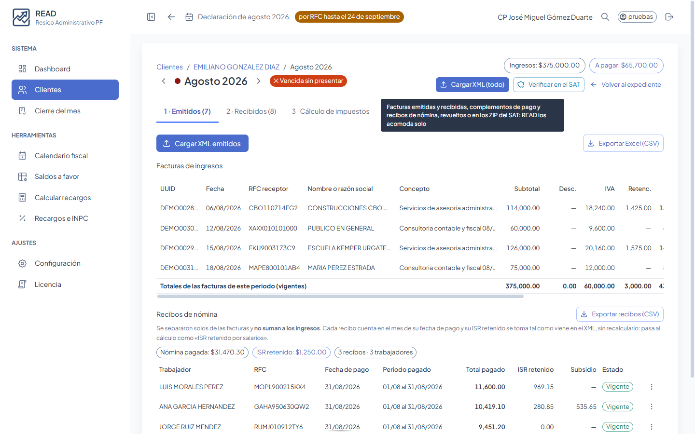

Para contadores y despachos
READ lee los XML del SAT, analiza los gastos, calcula ISR, IVA y retenciones, y te entrega el informe listo para tu cliente. RESICO y Arrendamiento de personas físicas.

Los ZIP del SAT o XML revueltos: READ acomoda emitidos, recibidos, complementos de pago y nómina.
Cada gasto con SÍ, NO o REVISAR según la ley, y READ aprende tus decisiones por proveedor.
Flujo de efectivo, retenciones de personas morales, saldos a favor, ISR retenido por salarios y ajustes a mano.
Con tu firma, el desglose y la hoja lista para capturar en el portal del SAT. En PDF o Excel.
Declaración anual y calculadora de actualización y recargos con el INPC.
Mensual o trimestral, deducción ciega o deducciones reales, y su declaración anual.

READ nació de las necesidades reales de un despacho que lleva clientes RESICO todos los días. Cada cálculo está revisado contra la ley y probado con cientos de casos.
Funciona en tu computadora, aunque se caiga el internet.
Todos incluyen el sistema completo y RFC ilimitados. 30 días de prueba gratis.
Pago anual: 12 meses por el precio de 10.
Los XML, cálculos e informes de tus clientes se guardan solo en tu computadora. No suben a ningún servidor.
Toda la información va cifrada, con un código de recuperación que solo tú tienes.
Entras con Google; a la nube solo va tu cuenta y tu licencia, nunca datos fiscales.
Escríbenos y te mandamos el instalador para Windows con 30 días de prueba.